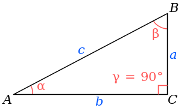

Triángulo Rectángulo
En geometría, se denomina triángulo rectángulo a cualquier triángulo que tiene un ángulo recto, es decir, un ángulo de 90 grados. Las razones entre las longitudes de los lados de un triángulo rectángulo es un enfoque de la trigonometría plana. En particular, en un triángulo rectángulo, se cumple el llamado teorema de Pitágoras ya conocido por los babilonios,? entre los años 2000 y 1600 a. C., en la Mesopotamia.
Terminología y Casos Especiales
Se denomina hipotenusa al lado mayor del triángulo rectángulo y es el lado opuesto al ángulo recto. Se llaman catetos a los dos lados menores, los que conforman el ángulo recto; cada cateto se opone a un ángulo agudo. Sólo si la medida de los tres lados son números enteros, estos constituyen un trío de nombre terna pitagórica.
Un triángulo rectángulo escaleno muy conocido, es el que tiene el cateto menor igual a la mitad de la hipotenusa, y estos dos lados forman un ángulo agudo de 30º y el otro ángulo de 60º, (30-90-60) y se obtiene al bisecar un triángulo equilátero por su altura; resultan estas razones entre dichos lados. Si admitimos que el lado del triángulo equilátero es 2a y mediante una altura se obtienen dos triángulos rectángulos, tal que en cada uno la hipotenusa es 2a; cateto opuesto al ángulo de 30º, a y cateto opuesto al ángulo de 60º
Propiedades
En todo triángulo rectángulo se cumple que:
- Tiene un ángulo recto (90°).
- Tiene dos ángulos agudos que son complementarios, es decir, que la suma de ambos es de 90°.
- La hipotenusa siempre es mayor que cualquiera de los catetos.
- El cuadrado de la hipotenusa es igual a la suma de los cuadrados de los catetos.
- La suma de la longitud de la hipotenusa y el diámetro de un círculo inscrito en el triángulo es igual a la suma de la longitud de los catetos.
- Para efectos de área, un cateto cualquiera se puede considerar como base y el otro cateto como altura.
- La mediana de la hipotenusa descompone un triángulo rectángulo escaleno en dos triángulos: uno obtusángulo y otro acutángulo, no congruentes pero equivalentes.
- La mediana de la hipotenusa de un triángulo rectángulo isósceles lo descompone en dos triángulos rectángulos isósceles congruentes y equivalentes.
- Dos triángulos rectángulos, con hipotenusa común, y los ángulos rectos en semiplanos opuestos determinados por la recta que contiene a la hipotenusa, forman un cuadrilátero birrectángulo.
- La mediana que parte del ángulo recto es igual a la mitad de la hipotenusa.
- La altura que parte del vértice del ángulo recto, coincide con un cateto, con tal de considerar al otro cateto como una base.
Tipos de Triángulo Rectángulo
Existen dos tipos de triángulo rectángulo:
- Triángulo rectángulo isósceles:Los dos catetos son de la misma longitud, los ángulos interiores son de 45-45-90. En este tipo de triángulo, la hipotenusa mide 2 veces la longitud del cateto.

- Triángulo rectángulo escaleno:Los tres lados y los tres ángulos tienen diferente medida. Un caso particular es aquel cuyos ángulos interiores miden 30-60-90, en este tipo de triángulo, la hipotenusa mide el doble del cateto menor, y el cateto mayor 3 veces la longitud del cateto menor.
- riángulo rectángulo de lados consecutivos:Las medidas de sus lados tienen 3, 4 y 5 unidades de longitud. Aparece en las culturas del cercano oriente: Babilonia y Egipto. Histórico, útil y didáctico, adaptable a un geoplano. Sin lados consecutivos es el triángulo de lados que miden 5, 12 y 13 unidades de longitud, menos conocido que el anterior.